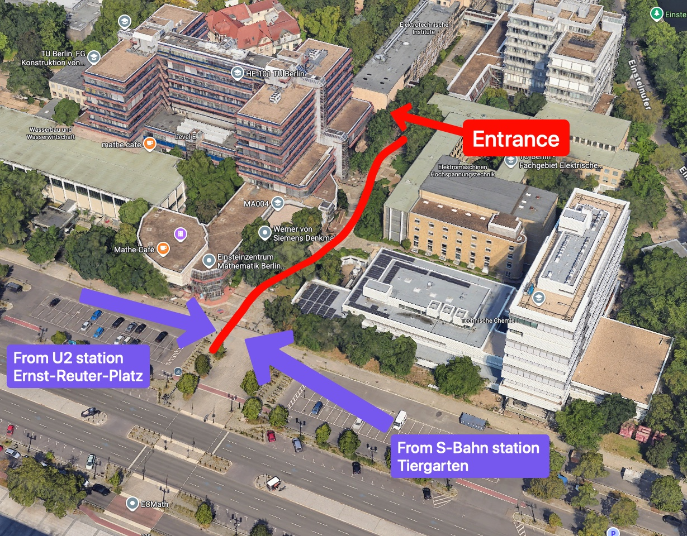
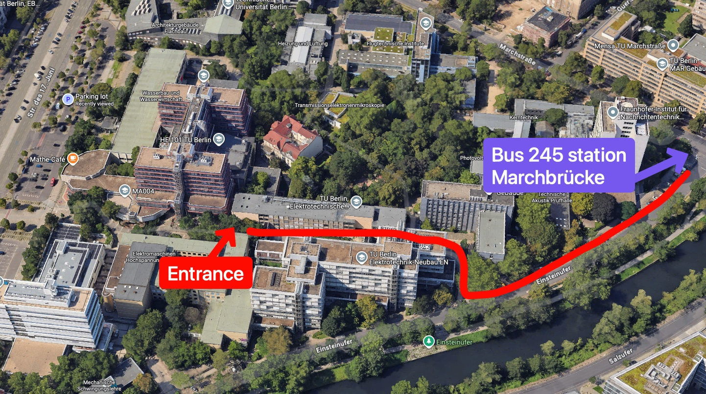
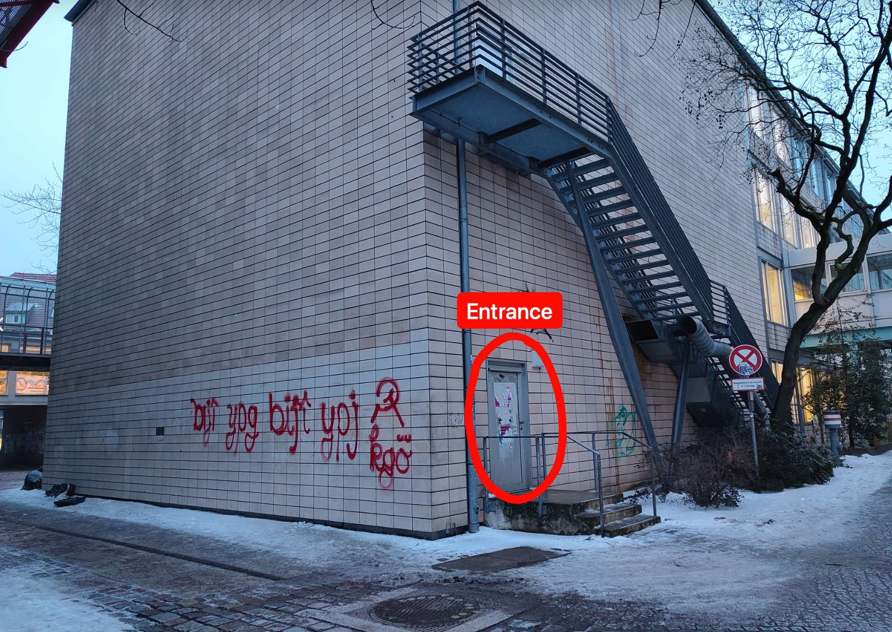

Thank you for taking part in our study! This page will help you find the entrance to the lecture hall where the study takes place.
Below you'll find detailed maps and photos to help you locate the entrance, as well as contact information. Please don't hesitate to call us if you're having trouble finding the location—time is limited, and we will need to close the room approximately 5 minutes after your scheduled appointment time.
⚠️ Important
Please plan to be at the location a few minutes in advance, since navigating the campus and finding the entrance can take longer than expected.
🚇 Public Transportation
The maps below show marked paths from all nearby public transit stations:
🗺️ Route Maps

Click to enlarge

Click to enlarge

The entrance is a small, unremarkable door that can easily be missed.
Click to enlarge